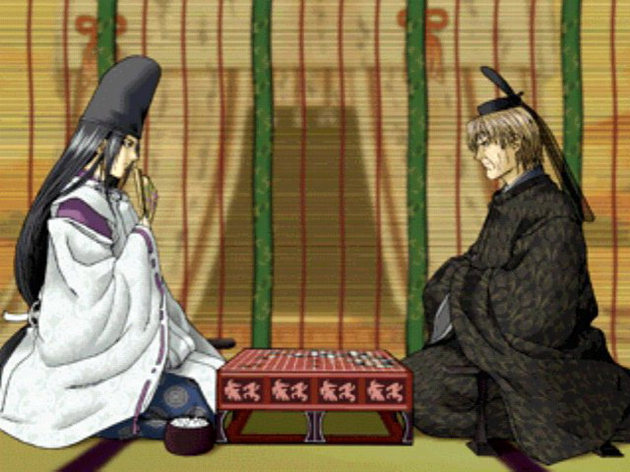

一盘松月自评
#1 一盘松月自评 作者：茗弈求学 发表时间：2011-5-16 19:09:35

面对这个松月这个较弱的打点，心理因素还是起了很大的作用，对手是的小刀姐，想的就是下“稳”点，小刀姐下的7明显是给我机会，让我8手活三形成上或下优，小刀姐9手应在上面，心头想的是想“稳”，结果第10手就急了，忘了冲4拓展空间，所以小刀姐11很自然的赌了眠三，意在包围，12手活三后，果然应证我的想法，13手直接挡在上面不给跳出去的机会，14时，我首先下面机会不大，而现在黑的外势很强，特别在右上，如果直接去应上面的话，左上又很好做棋，14最后还是继续做棋，15盖眠三必须的，盖了15后，我的危机感没那么大了，但实际情况恰恰相反，16没思考多久下在15下面第一，赌了一个黑的连接点。第二上面还有两个活二接应，我想小刀姐一定会在下面应一手吧，然后在去防右上，这样总不会死的很难看吧，17手小刀姐几乎没思考就直接在上面做棋，17已经显然是必胜之势了，去防也么多大意义了，想了下，没办法，只有在下面V呗，一算，才发现可用的链接点很不给力，同时可发展的空间也很可怜，结局很明显了，后仔细的在13手后做了一下分析若直接攻击的话，虽不能杀，但在线面黑白混乱的局面最后只会在右上留下黑优，慢慢的通过战场的转移还是有可能抹掉黑上面的优势的，面对较强的对手，心头懦弱了.
在下棋方面自己还有个很大的缺陷，就是思维敏捷度不够，在自己平时拆棋完的时候走出妙手是很常见的，但那是基于长时间的分析和判断，所以在游戏里下棋时老是在担心时间这个问题.前一段时间有去特地观战快棋棋手，目的不是为了下快棋，就是锻炼瞬间反应力。效果有点汗颜！感觉自己的棋力到此有点瓶颈了！但是空间肯定还有的，而且很大，嘿嘿！下棋是我生活的装饰，是一种享受，棋力不是目标，棋力的提高是循序渐进的！
［ 安娜制作所 于 2011-5-20 9:27:37 时花20金币送鲜花一朵］
#2 Re:一盘松月自评 作者：茗弈求学 发表时间：2011-5-16 19:14:02
